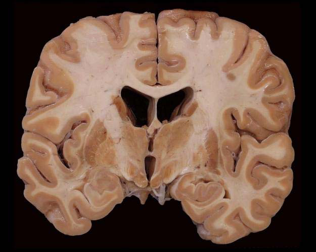

Menu
Psychisch functioneren en Cognitie2e Toetsmoment 2016‑2017
Examen inleveren
Weet je zeker dat je het examen afsluit?
Examen resetten
Al je antwoorden worden gewist en je begint opnieuw. Weet je het zeker?
Jouw resultaten
Psychisch functioneren en Cognitie · 2e Toetsmoment 2016‑2017
—
/ 51
0
Goed
0
Fout
0
Niet beantwoord
Vraag 1
Mevrouw D., 85 jaar, wordt opgenomen op de afdeling interne geneeskunde vanwege een urineweginfectie. Zij is bekend met de ziekte van Parkinson en dementie. Op de afdeling is zij verward, gedesoriënteerd in tijd en plaats, en onrustig. De verpleegkundige vertelt dat de symptomen wisselen in de loop van de dag.
Welk klinisch gegeven levert de belangrijkste aanwijzing dat er, naast de dementie, ook sprake is van een delier?
Vraag 2
Vervolg casus mevrouw D. (85 jaar, ziekte van Parkinson en dementie, delier op de afdeling).
Welk antipsychoticum is relatief gecontra-indiceerd bij mevrouw D.?
Vraag 3
Vervolg casus mevrouw D. U besluit mevrouw D. in te stellen op clozapine en start met een lage dosering.
Welke bijwerking dient u door middel van labcontroles te monitoren?
Vraag 4
Mevrouw M., 70 jaar, wordt aangehouden naar aanleiding van een winkeldiefstal. Volgens echtgenoot heeft zij 4 weken daarvoor ook al geld ontvreemd van familieleden. Dit gedrag heeft zij nooit eerder vertoond. Toen hij haar daarmee confronteerde reageerde ze onverschillig. Echt boos wordt ze al tijden niet meer. Ze vertoont sinds een jaar dwangmatig poetsgedrag. Verward is zij volgens echtgenoot niet. Ze ziet of hoort ook geen rare dingen en er bestaan geen taalstoornissen.
Er is bij mevrouw M. waarschijnlijk sprake van
Vraag 5
Vervolg casus mevrouw M. Na onvoldoende effect van een behandeling met een cholinesteraseremmer, wordt mevrouw M. opgenomen in het verpleegtehuis. Een verzorgster vraagt de arts waarom dit nodig was; mevrouw is op de afdeling immers prima te hanteren.
Wat blijkt uit onderzoek de grootste belasting voor de mantelzorger te zijn?
Vraag 6
Je bent in het Amsterdamse Bos en ziet dhr A., 75 jaar, lopen. Hij loopt alleen en ziet er mager en verwilderd uit. Als je hem aanspreekt reageert hij pas na enige tijd. Hij lijkt soms wat afgeleid. Als je hem vraagt of je iemand voor hem kan bellen zegt hij dat zijn vrouw is overleden. Je vraagt of hij kinderen heeft, waarop hij zegt dit niet te weten. Hoe lang hij al in het park is weet hij ook niet. Hij geniet niet meer van het zomerweer en van zijn hobby (vissen).
Welke psychiatrische symptomen worden beschreven in deze casus?
Vraag 7
Vervolg casus dhr A. Je maakt je zorgen en loopt met hem naar de VUmc huisartsenpost. Na lichamelijk onderzoek besluit de huisarts de psychiater in te schakelen. De psychiater vindt dat de heer A. vanwege de verdenking op een psychiatrische ziekte met bijkomend gevaar moet worden opgenomen middels een Inbewaringstelling (IBS) in de Valeriuskliniek (GGZ-instelling met BOPZ-aanmerking).
Wat is waar met betrekking tot een gedwongen opname van de heer A.? De heer A. kan
Vraag 8
Vervolg casus dhr A. Tijdens opname wordt dhr A. behandeld met electroconvulsieve therapie (ECT).
De frequentie en duur van een gemiddelde ECT-behandeling is
Vraag 9
Dhr J., 23 jaar, is opgenomen op de Intensive Care van een GGZ-instelling. Hij is blootvoets roepend aangetroffen op straat; hij wilde op blote voeten naar Egypte lopen. Tot een jaar geleden studeerde hij fiscaal recht; in 4,5 jaar heeft hij zijn Bachelor gehaald. Het afgelopen jaar lukte het niet om verder te studeren in de Master, of om werk te vinden. In zijn studentenhuis is hij steeds stiller en eenzamer geworden. Volgens zijn broer toonde hij lange tijd maar weinig emoties. Hij kan niet uitleggen waarom hij op blote voeten zijn tocht wilde uitvoeren. Hij vertelt dat hij naar de politie ging voor hulp, “maar toen vond er een terechtstelling plaats”.
Je denkt aan schizofrenie. Wat is waar ten aanzien van de diagnostiek? Voor het stellen van de diagnose
Vraag 10
De heer T., 36 jaar, heeft al enkele jaren last van wanen en leidt een teruggetrokken bestaan. Hij heeft al verschillende behandelingen ondergaan en verschillende antipsychotica voorgeschreven gekregen, maar zijn klachten blijven bestaan. Zijn psychiater besluit hem clozapine voor te schrijven.
Wat is de belangrijkste reden om voor clozapine te kiezen? Clozapine
Vraag 11
Psychiatrische stoornissen kennen een genetische variatie. Tussen welke twee psychiatrische stoornissen bestaat de grootste overlap in tot nu toe gevonden genetische varianten? Schizofrenie en
Vraag 12
Welk symptoom / welke symptomen worden in het psychiatrisch onderzoek ondergebracht bij de affectieve functies? Er zijn meerdere antwoorden mogelijk.
Meerdere antwoorden mogelijk.
Vraag 13
Een studente voelt zich tijdens de menstruatie altijd erg naar. Ze vraagt zich af of ze misschien een premenstruele stemmingsstoornis heeft. Uit de anamnese door de huisarts komen de volgende klachten naar voren: ze voelt zich tijdens de menstruatie altijd gespannen en prikkelbaar. Daarnaast heeft ze diverse lichamelijke klachten (gevoelige borsten en spierpijn).
Voldoet zij hiermee aan de diagnose premenstruele stemmingsstoornis?
Vraag 14
U bent huisarts. De heer P., 40 jaar, is sinds 2 weken somber en beleeft geen plezier meer aan zijn werk, relatie en hobby's. Hij heeft nergens meer fut voor, slaapt slecht en heeft het gevoel dat hij waardeloos is. Zijn zus is gediagnosticeerd met een bipolaire stoornis.
Wat is volgens DSM-5 het verschil tussen een depressieve episode die optreedt bij een unipolaire stemmingsstoornis versus een bipolaire stemmingsstoornis?
Vraag 15
Vervolg casus heer P. Naast het starten van ondersteunende gesprekken bij de praktijkverpleegkundige heeft de heer P. de wens om te starten met een antidepressivum. U overweegt om een SSRI te starten, maar wilt eerst nagaan of er geen contra-indicaties bestaan.
Wat is een contra-indicatie om te starten?
Vraag 16
Vervolg casus heer P. De heer P. werd ingesteld op een SSRI, waarmee de klachten leken af te nemen. Vijf jaar later maakt de heer P. vanwege terugkerende somberheid en lusteloosheid opnieuw een afspraak met zijn behandelaar. Deze besluit hem opnieuw een geneesmiddel voor te schrijven.
Welk van de volgende geneesmiddelen zal de behandelaar de heer P. in eerste instantie voorschrijven?
Vraag 17
De serotonine-bevattende vezels in de cortex hebben hun cellichamen in:
Vraag 18
Bij de behandeling van depressie vinden MAO-remmers nauwelijks nog toepassing, vanwege het mogelijk optreden van:
Vraag 19
Mevrouw L., 30 jaar, is 2 weken geleden haar baan kwijtgeraakt. Haar zus trekt bij de huisarts aan de bel omdat mevrouw L. sinds een week nauwelijks meer slaapt. Ze is op advies van haar zus iets van de drogist gaan gebruiken, zonder effect. In de voorgeschiedenis is mevrouw L. bekend met diabetes mellitus type I, de ziekte van Crohn en migraine. Mevrouw L. maakt zich totaal geen zorgen om het slaapgebrek, maar komt eerder geïrriteerd over, omdat ze naar eigen zeggen haar tijd liever gebruikt voor 4 sollicitatiegesprekken die ze deze week nog heeft. Ze spreekt snel en switcht tussen het ene en andere onderwerp.
Welk farmacon kan de symptomen van mevrouw L. veroorzaken?
Vraag 20
Vervolg casus mevrouw L. De symptomen blijken uiteindelijk los te staan van haar medicatie. Ze wordt met succes medicamenteus behandeld, waardoor een opname kan worden afgewend.
Wat is, gegeven de balans tussen effectiviteit en nevenwerkingen, het eerste keuze middel voor de onderhoudsbehandeling van haar stoornis?
Vraag 21
Dhr W., 48 jaar, komt bij een psychiater met de klacht dat hij last heeft van spanningen die hem ernstig belemmeren bij zijn dagelijkse activiteiten. Hij heeft voortdurend zorgen of hij zijn baan wel behoudt, over zijn gezondheid, over het opvoeden van de kinderen en het op tijd zijn voor afspraken. Hij heeft het gevoel “gek” te worden. De psychiater vraagt zich af of cognitieve gedragstherapie een mogelijke behandeloptie is, en besluit een G-schema te toetsen.
“Ik heb het gevoel gek te worden” valt onder de G van
Vraag 22
Vervolg casus dhr W. Na een uitvoerig gesprek concludeert de psychiater dat dhr W. lijdt aan een gegeneraliseerde angststoornis en besluit hem het geneesmiddel buspiron voor te schrijven.
Via welke receptoren oefent buspiron zijn werking uit in de hersenen? Er bestaat een partiële activatie van
Vraag 23
Vervolg casus dhr W. Een week later meldt dhr W. zich weer bij de psychiater met de mededeling dat hij nog steeds veel last heeft van zijn algemene gevoelens van angst, ondanks dat hij buspiron elke dag trouw heeft ingenomen.
Welk besluit verwacht u dat de psychiater neemt ten aanzien van de behandeling van deze patiënt?
Vraag 24
In welk hersengebied verwacht u met name toegenomen activiteit gemeten met functionele MRI als u een proefpersoon in de scanner afbeeldingen toont van mensen met agressieve gelaatsuitdrukkingen?
Vraag 25
Tot welk cluster in de DSM-5 behoren onderstaande persoonlijkheidsstoornissen?
Afhankelijke persoonlijkheidsstoornis
Dwangmatige persoonlijkheidsstoornis
Narcistische persoonlijkheidsstoornis
Paranoïde persoonlijkheidsstoornis
Vraag 26
Op de verpleegafdeling longziekten wordt u als psychiater in consult gevraagd door de longarts i.v.m. samenwerkingsproblemen van de verpleegkundigen met een mannelijke patiënt. Het betreft de heer G., 45 jaar oud. Hij lacht en huilt in hetzelfde gesprek, heeft een slechte impulsbeheersing en uitbarstingen van agressie of woede, die niet in verhouding staan tot de prikkel.
U noteert in de status mentalis dat er sprake is van
Vraag 27
Vervolg casus heer G. Door de verpleegkundige worden ook periodes beschreven van apathie, achterdocht en paranoïde ideeën. Er is in de afgelopen 24 uur geen sprake geweest van een gedaald bewustzijn.
Welke stoornissen mogen niet ontbreken in uw differentiaaldiagnose? Kies er vier uit de volgende opsomming:
Meerdere antwoorden mogelijk.
Vraag 28
Vervolg casus heer G. De heer G. vertelt dat zijn vrouw recentelijk vreemd is gegaan met een andere man. De zaalarts reageert snel: ‘Aha, u bent nu boos op haar!’
In welke valkuil trapt de arts hier?
Vraag 29
Zij vraagt u of ze een verhoogde kans heeft op psychiatrische problemen in de zwangerschap. Geef per aspect aan of dit voor mevrouw T. geldt.
een verhoogde kans op een depressie
een verhoogde kans op een psychose
Vraag 30
60% van de psychiatrische patiënten heeft één of meerdere persoonlijkheidsstoornis(sen) naast een psychiatrische stoornis. Om een vergelijkbare klachtenreductie van de comorbide psychiatrische stoornis te bereiken, geldt het volgende. De behandeling voor de psychiatrische comorbide stoornis:
Vraag 31
De 24-jarige Bob vertelt dat hij een stuk van de tijd kwijt is. Hij weet niet meer goed wat hij op een dag heeft gedaan. Bij doorvragen vertelt hij dat hij op de bank zat en dat het ineens een paar uur later was. Hij voelde zich van streek door een ruzie met een vriend. Als hij goed probeert weet hij wel dat hij een kop thee heeft gemaakt en dat hij de neiging had zichzelf te verwonden met een scheermesje.
Wat is de meest waarschijnlijke diagnose?
Vraag 32
Je stelt psychotherapie voor als behandeling voor een posttraumatische stressstoornis. Je hebt de keuze tussen cognitieve gedragstherapie met exposure en EMDR. Waarop baseer je je keuze?
Vraag 33
Nadat een jongen van 12 jaar hevig heeft moeten braken bij een buikgriep, durft hij niet goed meer te eten, omdat hij voortdurend bang is misselijk te worden en opnieuw over te moeten geven. De klachten bestaan zes maanden. De jongen heeft in deze zes maanden niet meer overgegeven en is 5 kg afgevallen, waardoor zijn BMI nu 18 is. Hij ziet er tegen op om naar school te gaan. Hij kan moeilijk zijn aandacht bij zijn schoolopgaven houden en is bang om op school te moeten braken.
De casus wijst op een psychiatrisch syndroom, dat echter niet volledig beschreven is. Aan welk syndroom of welke syndromen moet de coassistent differentiaaldiagnostisch denken?
Vraag 34
Mw. K., 25 jaar, ontwikkelt een paniekstoornis en een agorafobie.
Welke twee aspecten zeggen iets over de ernst van deze specifieke aandoeningen?
Meerdere antwoorden mogelijk.
Vraag 35
Dhr E., 18 jaar, rookt al twee jaar dagelijks hasjiesj. Hoewel de hasjiesj hem rust en kalmte brengt, merkt hij ook op dat hij tussen het roken door steeds angstiger wordt. Hij stopt het roken van hasjiesj, maar blijft overdreven angstig. Zijn hersenvreessysteem is gevoeliger geworden dan het voor zijn 16e jaar was en geeft sneller een angstrespons.
Het overgevoelige hersenvreessysteem is: (1) de oorzaak van zijn angst, (2) het correlaat van zijn angst, (3) het gevolg van zijn angst.
Vraag 36
Dhr P., 36 jaar, komt bij de huisarts met dwanggedachten en dwanghandelingen. Deze klachten bestaan 6 maanden. De huisarts vermoedt een psychiatrische stoornis. Op basis van comorbiditeitspatronen die gevonden zijn bij onderzoek in de algemene bevolking moet hij bij deze man bedacht zijn op de aanwezigheid van één of meer andere psychiatrische stoornissen.
Welke twee stoornissen zijn dat?
Meerdere antwoorden mogelijk.
Vraag 37
Mw. J., 38 jaar, komt op uw spreekuur. U bent huisarts. Zij is een beruchte kettingrookster die na vele stoppogingen besloten heeft een dokter te raadplegen om definitief met roken te kunnen stoppen. U schrijft haar een geneesmiddel voor ter ondersteuning.
Welk geneesmiddel gaat u haar voorschrijven?
Vraag 38
Onderzoek onder tweelingen naar de overerfbaarheid van roken en rookgedrag heeft laten zien dat zowel genetische als omgevingsfactoren een rol spelen, maar dat deze rol afhangt van de fase van de rookverslaving. Welke factoren spelen de belangrijkste rol bij nicotine-afhankelijkheid?
Vraag 39
Langdurig gebruik van benzodiazepinen kan, naast het optreden van tolerantie en afhankelijkheid, leiden tot:
Vraag 40
De cannabisreceptoren die na activatie zorgen voor een verhoogde afgifte van dopamine in de nucleus accumbens bevinden zich voornamelijk:
Vraag 41
Metamfetamine en cocaïne horen beide tot de groep van psychostimulantia. Beide stoffen remmen de heropname van dopamine. De effecten van metamfetamine op de dopamine-neurotransmissie zijn echter sterker dan die van cocaïne omdat metamfetamine ook zorgt voor:
Vraag 42
Zie figuur 1 (originele bron afbeelding: anatomie en neurowetenschappen). Welke vier tot de basale ganglia behorende structuren zijn zichtbaar in deze figuur? Vink alle juiste antwoorden aan.

Meerdere antwoorden mogelijk.
Vraag 43
Stelling: De kenmerken van een persisterende depressie verschillen bij kinderen in vergelijking tot volwassenen doordat de duur van de depressieve stemming bij kinderen 1 in plaats van 2 jaar is en de stemming zich vaak uit door prikkelbaarheid.
Vraag 44
Sergei, 9 jaar oud, komt bij u vanwege een eetprobleem. Zijn ouders geven aan dat hij alleen maar wit eten wil eten. Dit beperkt zijn dieet aanzienlijk. Vooral groenten zijn een probleem, waardoor hij bijna elke dag bloemkool eet. Als er iets van kleur op zijn bord verschijnt, raakt hij overstuur en knijpt zijn ogen stijf dicht. De laatste tijd wordt hij zelfs boos als er een dag geen bloemkool, maar bijvoorbeeld asperges op het menu staan.
Welke twee symptomen van autisme herkent u in deze casus?
Meerdere antwoorden mogelijk.
Vraag 45
Fjort is net gestart in groep 3 van de basisschool. Tijdens het eerste rapportgesprek blijkt dat het niet zo goed gaat met hem op school. Het rekenen doet hij uitstekend, bovengemiddeld zelfs, maar taal is moeilijker. Daarbij komt dat zijn handschrift erg slecht is; meestal weigert hij eenvoudigweg te schrijven. In de klas ziet de leerkracht dat hij de hele dag zacht prevelend aan het hoofdrekenen is. Dit belemmert hem ook in het contact met klasgenoten, omdat hij niet mee wil doen met de spelletjes die zij spelen. Hij heeft geen vriendjes in de klas.
Wat voor onderzoek gaat u doen?
Vraag 46
Als net 13-jarige heeft Dirk al veel meegemaakt. Hij is meerdere malen geplaatst bij nieuwe opvoed-/pleegouders. Recent is het ook bij zijn oom geëscaleerd. Dirk hield zich niet meer aan regels, loog vaak om verplichtingen te ontlopen, kwam 's avonds en 's nachts vaak niet op tijd thuis en is met politie in contact geweest. Op school pest en intimideert hij vaak anderen en is hij vaak licht geraakt, boos en ontevreden.
Welke drie kenmerken passen bij een (normoverschrijdende) gedragsstoornis?
Meerdere antwoorden mogelijk.
Vraag 47
David is een 14-jarige jongen die sinds twee jaar op het speciaal voortgezet onderwijs zit. Hij geeft in gesprek met zijn tutor aan dat hij onder zijn niveau les krijgt, hoewel hij op toetsen onvoldoendes haalt. Hij belandt regelmatig in vechtpartijen, waar volgens hem anderen schuldig aan zijn. Regelmatig weigert hij te doen wat een leraar vraagt. Als het gezellig is in de klas geeft hij aan profvoetballer te willen en kunnen worden, hoewel hij nu nog niet op een voetbalclub zit.
Aan welke diagnose denkt u het meest?
Vraag 48
Kies de juiste alternatieven.
Zoraya, 14 jaar, heeft een oppositioneel opstandige stoornis en ADHD. In het adviesgesprek over de behandeling wordt voorgesteld te starten met een en daarnaast .
Vraag 49
Vervolg casus Zoraya. De kinderpsychiater bespreekt welke factoren van invloed zijn op de vastgestelde oppositioneel-opstandige stoornis.
Selecteer het juiste antwoord. Bij kinderen met ODD, stijgt in reactie op stress de cortisolspiegel
Vraag 50
Sanne is een 15-jarige adolescente die sinds de overgang naar de middelbare school toenemend opstandig, mopperend en teruggetrokken gedrag heeft laten zien. Ze werkt heel hard voor school, maar kan zich vaak moeilijk concentreren omdat ze veel piekert. Haar vroegere vrolijkheid lijkt verdwenen. Ze wordt door kinderen in de klas, met wie ze weinig aansluiting heeft en die grapjes over haar maken, als ‘studje’ gezien, wat haar onzeker maakt. Haar moeder heeft onlangs een gesprek met haar gevoerd waarin ze aangaf soms liever dood te willen zijn en de toekomst niet te zien zitten. Moeder vindt haar een echte puber en vraagt zich af waarom ze niet meer vriendinnen heeft.
Wat is de hoofddiagnose van Sanne?
Vraag 51
Zet de verschillende tuchtmaatregelen in de goede volgorde, oplopend in zwaarte (1 = lichtste maatregel, 6 = zwaarste maatregel). Geef per maatregel de juiste positie aan.
Sleep een optie naar de bijbehorende rij, of tik eerst op een kaart en dan op een rij.
waarschuwing
Sleep hier naartoe
berisping
Sleep hier naartoe
geldboete
Sleep hier naartoe
schorsing van de inschrijving in het BIG-register
Sleep hier naartoe
gedeeltelijke ontzegging
Sleep hier naartoe
doorhaling van de inschrijving in het BIG-register